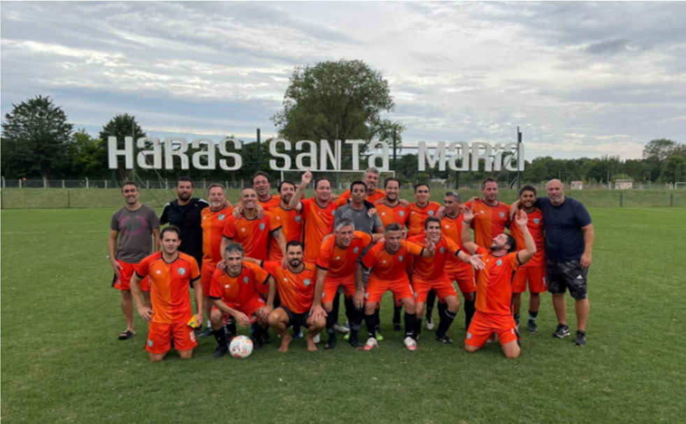
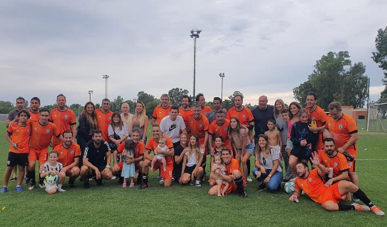
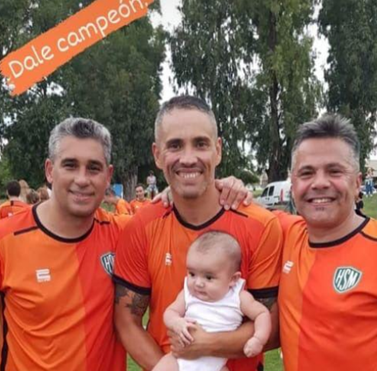
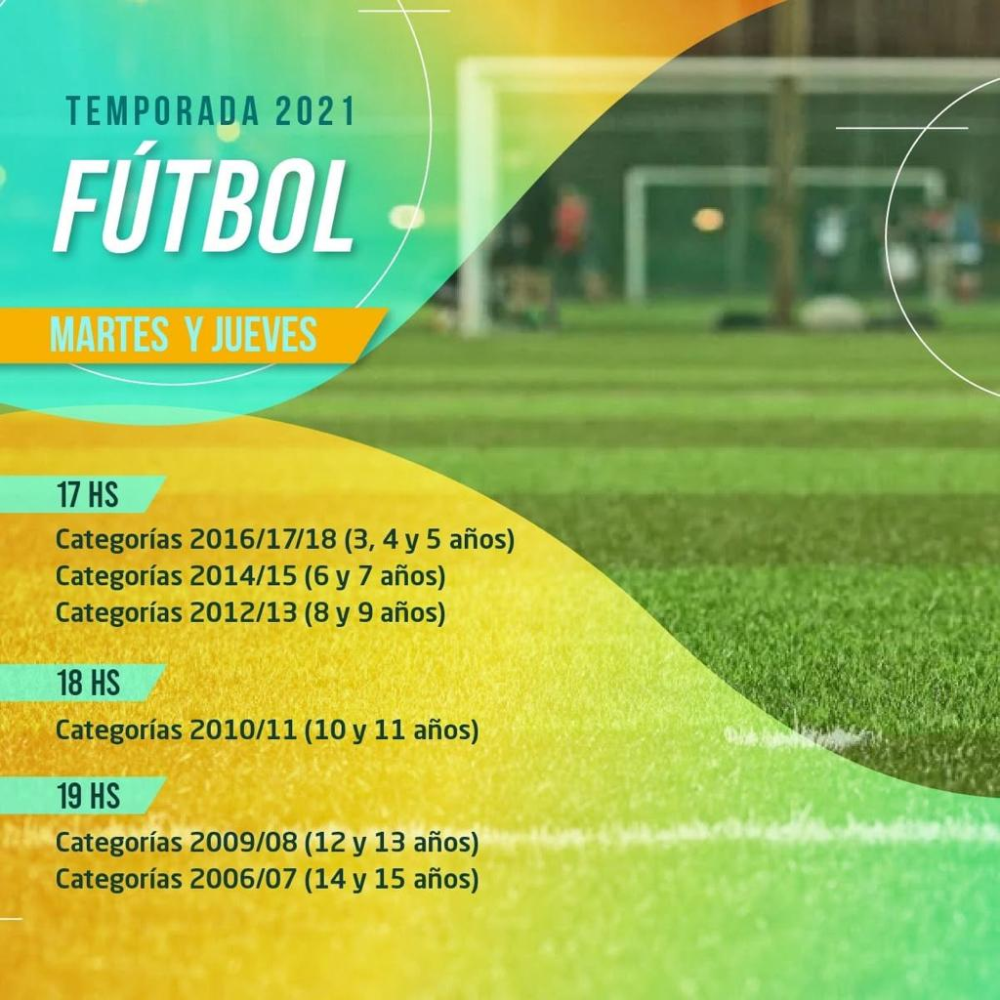
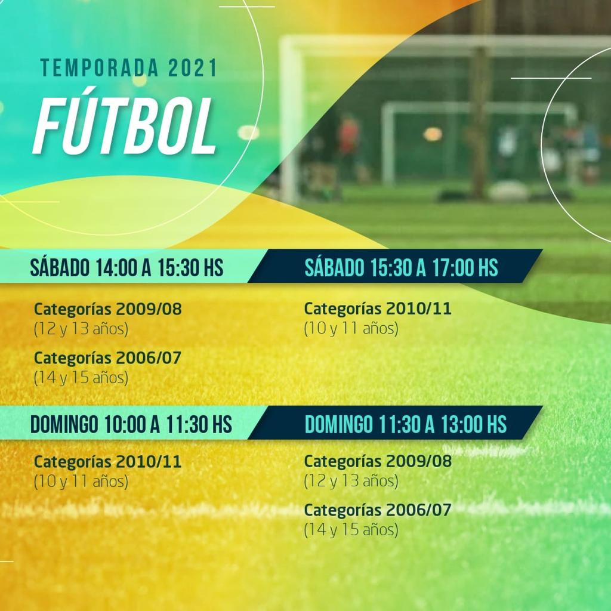

07/03/2022



El Sábado 5/03/2022, nuestro equipo SENIOR VERDE- HSM, luego de una brillante campaña, se consagró Campeón del torneo Clausura, en la Categoria Senior de la Asociacion Intercountry de Futbol.
Salud CAMPEON !!!!
Fútbol
Martes y jueves
17 hs Jardin 6/7 y 8/9 años
18 hs 10/11 años
19 hs 12/13 14/15 años
Sábados
14 hs a 15,30 hs 12/13 y 14/15
15,30 a 17 hs 10/11 años
Domingo
10 a 11,30 hs 10/11 años
11,30 a 13 hs 12/13 y 14/15 años

